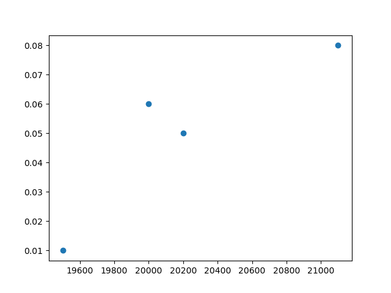

Thesis title
This document shows you the syntax to type your thesis in latex or org-mode. It illustrates how to make footnotes, tables, equations and references to tables, equations etc.
If you want to work with latex only, look at the .tex file of this document. If you want to use emacs org-mode, then use the .org file. The pdf shows what the file looks like if you export it.
Running python code in this file only works in emacs org-mode; not in latex.
SNR: 12345
ANR: 98765
Supervisor: Alfred Marshall
Second reader: Karl Marx
Table of Contents
1 Introduction
\label{sec:intro}
This file shows you how to use emacs org mode to write a thesis. Shows you how to cite references, make footnotes, equations etc.
Alternatively, you can use latex directly in which case you can consider the file in this repository that ends in .tex.
In order to use emacs, you need to install it. The official website's download information: https://www.gnu.org/software/emacs/download.html
In Section sec:install we explain how emacs can be installed.
2 Literature references
There are a number of ways in which you can do literature citations in org-mode. We will work with org-ref:
The syntax for including references is as follows. See Farrell and Klemperer 2007 for an analysis. We can also have references between brackets (Athey and Imbens 2019): that is, citep instead of citet. armstrong-2007-chapt-coord is the bibtex key, as you can see in the file references.bib.
If you use the init.el file for emacs, you can use the keys: C-c ] (press control (Ctrl) and c together; release these keys and then press the ]-key). The bottom part of the screen then gives you possible papers to cite from your references.bib file.
3 Model
As we explained in section sec:intro. This shows the syntax for a reference to a section, equation, table, figure etc. Type ref: and then the name of the label you are refering to. This can also be done with key strokes: C-c )
A label is typed in latex format as: \label{name_of_label}. For org-mode you need to add #+name: name_of_label to tables and figures.
Here we have some in-line math: \(x^2\).1
\begin{equation} \label{eq:1} a^2 + b^2 = c^2 \end{equation}As we show in equation eq:1.
See Table table1.
| country | unemployment | gdp |
|---|---|---|
| NL | 0.06 | 20000 |
| UK | 0.01 | 19500 |
| BE | 0.08 | 21100 |
| average | 0.05 | 20200 |
Creating tables in org mode is a lot easier than in latex. Just type "|" name of column, another "|" name of second column, etc. end the line with "|", then press TAB.
If you want a horizontal line, type "|-—" and press TAB.
In org mode (not in latex) you can add spreadsheet type calculations. See https://orgmode.org/worg/org-tutorials/org-spreadsheet-intro.html if you want to know more about this.

Figure 1: \label{figure1} Figure with unemployment and gdp
See Figure figure1.
4 What should your editor be able to do?
4.1 Basics
- type text…
- work on different parts of the same file in a split window
- help with syntax, e.g. by providing snippets for equations, environments etc.
- e.g. with org cdlatex mode: type "equ" and then TAB to get an equation environment
- ` a to get \(\alpha\)
- operate on regions: e.g. for search and replace
- operate on columns:
- delete columns in text
- copy and past columns
- add text in a column
- add references to equations, sections, tables, figures
- cite literature from a bibliography file
- make it easy to add tables and edit tables (e.g. switch rows)
- export to pdf
4.2 Advanced
- combine code and latex
- spreadsheet type capabilities
- export to other formats, e.g. html
4.2.1 why do we want to operate on columns?
Turn the table here: http://fmwww.bc.edu/ec-p/data/oecd/oecd.ctylist.html into a python dictionary:
- C-v and block the start of each line
- I and type '; then press ESC
- block at the end of the abbreviation with C-v
- type I and ' : '; then press ESC
- block spaces (tab) to delete
- block all lines with C-v
- type $ A ',; then press ESC
- delete superfluous , at the end
- add {} to turn this into a dictionary
- a video on how to do this with regular emacs keybindings, can be found here: https://www.youtube.com/watch?v=pcA5NeEudgU
dict = { 'AUS' : 'Australia', 'AUT' : 'Austria', 'BEL' : 'Belgium', 'CAN' : 'Canada', 'CHE' : 'Switzerland', 'DEU' : 'Germany', 'DNK' : 'Denmark', 'ESP' : 'Spain', 'FIN' : 'Finland', 'FRA' : 'France', 'GBR' : 'Great Britain', 'GRC' : 'Greece', 'IRE' : 'Ireland', 'ISL' : 'Iceland', 'ITA' : 'Italy', 'JPN' : 'Japan', 'KOR' : 'South Korea', 'LUX' : 'Luxemburg', 'MEX' : 'Mexico', 'NLD' : 'Netherlands', 'NOR' : 'Norway', 'NZL' : 'New Zealand', 'PRT' : 'Portugal', 'SWE' : 'Sweden', 'TUR' : 'Turkey', 'USA' : 'United States'} dict['NLD']
Netherlands
Another trick we can use in org mode is to paste the table directly from the website:
AUS Australia AUT Austria BEL Belgium CAN Canada CHE Switzerland DEU Germany DNK Denmark ESP Spain FIN Finland FRA France GBR Great Britain GRC Greece IRE Ireland ISL Iceland ITA Italy JPN Japan KOR South Korea LUX Luxemburg MEX Mexico NLD Netherlands NOR Norway NZL New Zealand PRT Portugal SWE Sweden TUR Turkey USA United States
- block the above table with Shift-V
- M-x org-table-create-or-convert-from-region
- and then add header with column names etc. to yield:
| abbrev. | country name |
|---|---|
| AUS | Australia |
| AUT | Austria |
| BEL | Belgium |
| CAN | Canada |
| CHE | Switzerland |
| DEU | Germany |
| DNK | Denmark |
| ESP | Spain |
| FIN | Finland |
| FRA | France |
| GBR | Great Britain |
| GRC | Greece |
| IRE | Ireland |
| ISL | Iceland |
| ITA | Italy |
| JPN | Japan |
| KOR | South Korea |
| LUX | Luxemburg |
| MEX | Mexico |
| NLD | Netherlands |
| NOR | Norway |
| NZL | New Zealand |
| PRT | Portugal |
| SWE | Sweden |
| TUR | Turkey |
| USA | United States |
5 Conclusion
Here you can type the conclusion which is then followed by the bibliography.
6 Bibliography
7 Things to install
\label{sec:install}
7.1 latex
Install latex: https://www.latex-project.org/get/
7.2 latex editors if you do not want to use emacs
- winedt: https://www.winedt.com/
- overleaf: https://www.overleaf.com/
- texmaker: https://www.xm1math.net/texmaker/
- tex studio: https://www.texstudio.org/
More general editors where you can also edit latex:
- atom: https://atom.io/
- and how to use with latex: https://towardsdatascience.com/setting-up-latex-on-your-atom-editor-7ea624571d50
- vim: https://www.vim.org/docs.php
7.3 git
install git: https://git-scm.com/downloads
7.4 Emacs
In the lecture I will illustrate what an editor can/should do using emacs.
7.4.1 Emacs on Windows
- go to: http://mirror.team-cymru.com/gnu/emacs/windows/emacs-27/
- download emacs-27.2-x8664-installer.exe to your Downloads folder: http://mirror.team-cymru.com/gnu/emacs/windows/emacs-27/emacs-27.2-x86_64-installer.exe
- run the downloaded
exefile
7.4.2 Emacs on Mac OS
For Mac Os:
- install homebrew: https://brew.sh/
Open a terminal and type the following lines:
brew tap d12frosted/emacs-plus brew install emacs-plus
7.4.3 Emacs on Linux
When you are using Linux, you probably know what you are doing. But just in case, the commands for your package manager can be found here: https://www.gnu.org/software/emacs/download.html
7.4.4 org-mode
When you install emacs, org-mode is installed as well (comes with emacs)
7.5 introductions to emacs
It is easy to get lost in emacs. Hence do not try to use everything at once. A couple of basic things, you need from the start (like opening and saving files). For the other things: move step-by-step.
A great starting point, explaining key-bindings etc. is:
- https://systemcrafters.net/emacs-essentials/absolute-beginners-guide-to-emacs/
- and the video that goes with it: https://www.youtube.com/watch?v=48JlgiBpw_I
- this explains things like "M-x", "C-c", "C-x" etc. which you can see when you use menu items like "file"
- to illustrate, use your mouse to click on "File" in the top left corner
- the first item is: "Visit New File… C-x C-f"
- you can click on this item to open a file; but you can also use the key combination C-x C-f which means: press Control (Ctrl) and x together; release these keys; then press Ctrl and f together. This allows you to open a file. If you type the name of a file that does not exist yet, this new file will be created
- you save a file with C-x C-s; hence you can quickly save a file by pressing these keys without having to reach for the mouse
- the emacs configuration below helps as it uses the which-key package. After typing C-x, it shows you what other keys you can use.
There are other great introductions to emacs as well:
- https://www.youtube.com/playlist?list=PL9KxKa8NpFxIcNQa9js7dQQIHc81b0-Xg
- https://www.youtube.com/playlist?list=PLwTHcico4iPMlBZPin6catRcUDzf7NNVs
- or google emacs tutorial or emacs for beginners
- finally, emacs is self documenting: all information can be found in emacs as well, just type C-h i
- this gives information on emacs and all the packages you installed with emacs
7.6 next steps
You can extend the configuration of emacs by yourself, e.g. by watching tutorials like: https://www.youtube.com/playlist?list=PLEoMzSkcN8oNmd98m_6FoaJseUsa6QGm2
Or you can use pre-configured emacs distributions like scimax and doom emacs.
7.6.1 scimax
Scimax is developed for engineers, but works perfectly well for economists. More details can be found here:
- https://github.com/jkitchin/scimax
- youtube playlist with scimax features: https://www.youtube.com/playlist?list=PL0sMmOaE_gs3E0OjExoI7vlCAVygj6S4I
7.6.2 Doom
Emacs has an absurd number of features and how do you choose the right ones if you do not know about them? Doom emacs has very reasonable default settings:
- https://github.com/hlissner/doom-emacs
- Doom emacs for noobs: https://www.youtube.com/watch?v=iab2z21cRqA
- Doom emacs getting started: https://www.youtube.com/watch?v=dr_iBj91eeI
- youtube playlist: https://www.youtube.com/playlist?list=PLhXZp00uXBk4np17N39WvB80zgxlZfVwj
Footnotes:
This is a footnote.